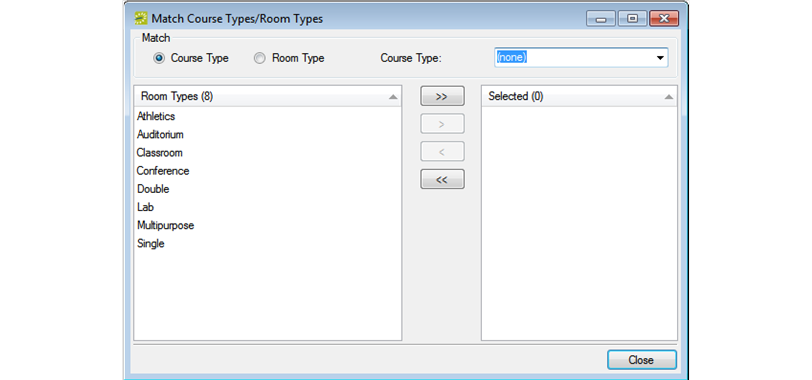

Configure Course Types/Room Types Matches
When you configure course types/room types matches, you are indicating what room types best match particular course types. For example, a laboratory room type is appropriate for a laboratory class, but not for a general lecture class. Configuring these matches helps optimize room and course setup in {{product_campus}}. When you configure course type/room type matches, you can approach it from either end—that is, you can select a specific course type and then select the room types that best match it, or you can select a specific room type and then select the course types best match it.
To configure course types/room types matches
- On the {{product_campus}} menu bar, click Academic Planning > Configuration > Match Course Types/Rooms Types. The Match Course Types/Room Types dialog box opens. By default, Course Type is selected and all the active room types that are currently configured in your {{product}} database are displayed in the Room Type list.
Tip: If the appropriate room type is not available, you can configure it. See “Configuring Room Types”.

- Do one of the following:
- To match a course type to one or more room types:
- Select the course type on the Course Type dropdown list.
- On the Room Types list, select the room type, or CTRL-click to select the multiple rooms types that are appropriate for the selected course type.
- Click the Move (>) button to move the selected room types to the Selected list. For example, if you select Discussion/Recitation for the Course Type, then appropriate room types could be Classroom or Conference Room.
- To match a room type to one or more course types:
- Click Room Type, and on the Room Type dropdown list, select the room type.
- On the Course Types list, select the course type, or CTRL-click to select the multiple course types that are appropriate for the selected room type.
- Click the Move (>) button to move the selected course types to the Selected list. For example, if you select Classroom as the room type, then appropriate course types could be Discussion/Recitation, Lecture, or Independent Study.
- Click Close.